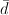

This utility performs calculations for testing claims about the mean of the differences between a population of matched pairs. The population is assumed to be approximately normal. The null hypothesis of a claim about a population mean μ is μ = μd. The alternative hypothesis can be one of the following: μ < μd, μ > μd, or μ ≠ μd.
The hypothesis test statistic is given by:
where  is the mean of the differences between sample matched pairs, sd is the standard deviation of the differences between sample matched pairs, and n is the number of matched pairs. The degrees of freedom is n - 1.
The sample data can be inputted in one of two ways:
The significance level or confidence level must be between 0 and 1. For example, enter 0.95 for a 95% confidence level.
The Alternative Hypothesis can be one of the following forms: Less than (μ < μd), Not Equal to (μ ≠ μd), or Greater than (μ > μd). Enter the Hypothesized Mean Difference (hypothesized mean of differences for the population of all matched pairs) in the provided text box.